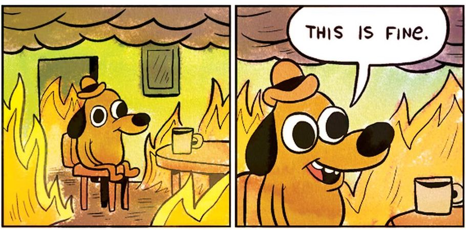
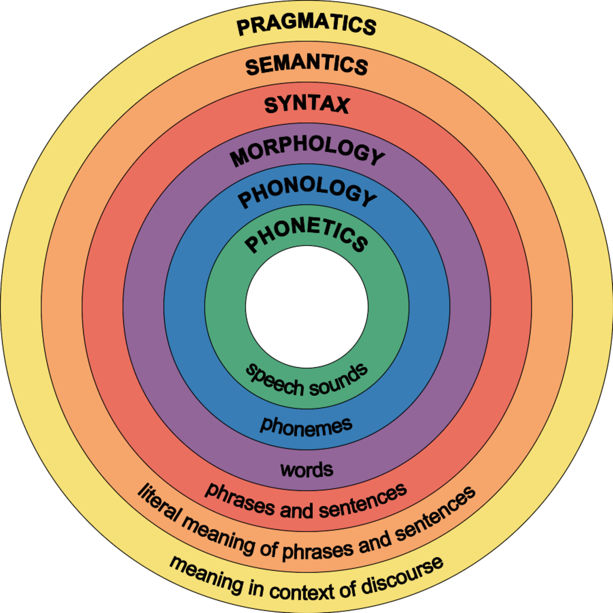
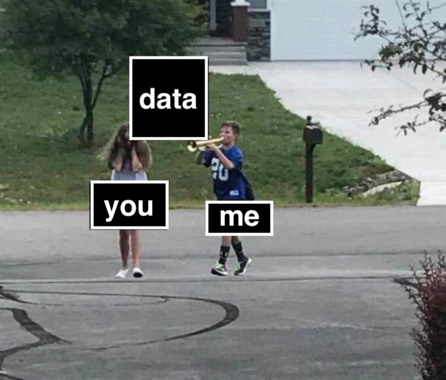

Linguistics 120: Morphology
Dr. Will Styler - Spring 2019
Today’s Plan
Introductions
Syllabus and Canvas
What is Morphology?
What are the learning goals?
How will we accomplish them?
Introductions
Dr. Will Styler
Instructor, Linguist, Gigantic Nerd

Andres Aguilar
TA, Ph.D Student

Amber Thompson
TA, Ph.D Student

Matt Zaslansky
TA, Ph.D Student

Who are you?
What’s your year?
Monolingual/Bilingual/Multilingual?
What languages do we speak?
Syllabus and Schedule
Syllabus Stuff which bears repeating

DO NOT PRINT THE SYLLABUS
Syllabus Stuff which bears repeating
Check your email/Canvas
Come to office hours.
The syllabus will change a lot!
We are here to help!
The 130 Elephants in the Room
This course is usually 60-70 people
Small groups are possible
Sections are a thing
Moveable tables
This is not what happened

We wanted to be able to keep you all on track
- … but this is uncharted territory for the department
We’re doing our best to make this a great experience for you
But please, understand that some things may be a bit bumpy!
Canvas
We’re moving to Canvas!
This will replace TritonEd within a few years
This is a pilot program
Let’s take a look!
What is this course about?
Clickers!
Clicker questions will start counting for points next week
Any iClicker will work.
Please feel free to buy used
Or borrow a friend’s for this class
Easy points!
This is a clicker question!
One Answer
Another
A third
The answer is D
I’m not paying attention.
This is a clicker question!
One Answer
Another
A third
The answer is D I’m not paying attention.
When should you tell Will about any special accomodations you’ll need?
Within the first two weeks
By the end of the quarter
When I’m freaking out about my grade at the end of the quarter
I won’t tell him, then pretend I did when it’s an issue at the end of the quarter
When should you tell Will about any special accomodations you’ll need?
Within the first two weeks By the end of the quarter
When I’m freaking out about my grade at the end of the quarter
I won’t tell him, then pretend I did when it’s an issue at the end of the quarter
You need to re-register your clickers in Canvas
- Only this once.
YOU NEED TO RE-REGISTER YOUR CLICKERS IN CANVAS
OK, so, what are we studying?
Morphology
The study of how words are constructed in language
Morphology is in a very central place in Linguistics
- 
Morphology is in a very central place in Linguistics
Close enough to Phonetics that you still have sound issues
All up in Phonology’s business
It’s the gateway to Syntax
… and it’s often the source of lexical meaning differences in Semantics
You cannot escape Morphology
- If you can’t take words apart, words will take you apart
Morphology is both theoretical and practical
“How do words work in Language”
“How do words work in this language”
Because Morphology is huge in scope
- There’s so much to cover that we need to think carefully about what’s on the table and not
Learning Goals
In this course, we’ll teach you about…
Morphological Analysis
Morphological Typology
Word Creation
The Lexicon
The Fuzzy Edges of Word-dom
How Morphology works in Languages
Morphological Analysis
How do we look at complete words and their meanings and determine the morphemes present?
How can you determine the morphological properties of an unknown language?
What are the best strategies for finding the relationship between a word’s form and its meaning?
What properties of words can carry meaning?
How do we solve morphological problems?
Morphological Typology
What is a word?
What kinds of morphemes are found around the world?
What kinds of morphemes are common around the world?
What categories of morphemes are useful to distinguish?
How does morphology work in different languages?
How does morphology work in signed languages?
Word Creation
How are new words formed?
What’s the difference between inflectional and derivational morphology?
What kinds of word creation processes are productive and/or creative right now?
What processes are commonly used when creating new words?
How do new words get their meanings?
The Lexicon
How are words stored in the mind?
What information accompanies words?
What are we actually storing when we store a word?
How does this representation affect our speech and language use?
The Fuzzy Edges of Word-dom
What is a word, anyways?
Do affixes ever feel like words?
When does a compound become a word?
What kind of problems do these expressions cause in analyzing language?
What’s out-of-scope for the class?
Topics we’re not covering here
Analyzing phonological alternations
- Nope.
Polysynthetic languages
- Nonopepenopenope.
Complex templatic morphology
- NnopeOnopePnopeE.
Methods for field elicitation of morphology
You should take field methods
OMG you should take field methods
Learning Goal Summary
You’ll learn how linguists think words are formed, stored, and created
You’ll learn how to analyze language data to find relationships between word form and meaning
You’ll learn why morphology is just so damned cool
How are we going to accomplish these goals?
In-class Presentations
‘Lecture’ days
I’ll have a plan and a presentation
You all will ask questions, and we will have discussions
Clickers will help us to check knowledge
Active learning does not work unless you’re active.
- Damnit.
Readings
Your book is actually really good
- Haspelmath and Sims Understanding Morphology
Language Data

Three ways of applying data to your brain
Discussion Problems
Homework assignments
In-class problem-sets
Discussion Problems
You’ll all have the same problem-set
You’ll work out a (partial) solution on your own, then post it on Canvas
Then you’ll talk with other students about their solutions
You’ll be graded on your effort and the quality of your replies, not the solution per se.
These replaced four full homeworks
- You’re welcome ❤
Homework problem sets
These let you work on problems on your own
These give us a chance to evaluate your work
You can discuss these with your classmates
- But you need to write up your own work, and mention who you’ve collaborated with
In-class Group Analysis
Designed to give you a chance to work with actual data
We’ll be here to help
You’ll also get to help your classmates
- This a part of the learning process
Pick a group you want to work with
- Feel free to float around.
Sorry about the classroom layout!
One thing I’d like to address…
“Group work!?”
Why do group work?
Groups stimulate creativity and alternate solutions
Discussing topics helps cement learning
It helps you be involved in decision-making
You’re gonna do group work for the rest of your life
LIGN 111 Students: Did you learn a bunch from the group work portions of the class?
Yes
Eh…
No
What’re the downsides?
Conformity pressure
Differing skill and preparation levels
It takes more time!
This lecture hall is gonna be tricky
Sitting in Row G is banned on group work days
This is so we can freely access all groups in this classroom
We’ll remind you, but that’s why
We’re gonna see how well this works
Optimizations will be made
The schedule will change (except due dates)
DO NOT PRINT THE SYLLABUS
This quarter…
We’ll learn how linguists think words work
We’ll learn the best practices for analyzing words in language data
We’ll delve into a truly wonderful area of linguistics
For Next Time
Re-Register your clickers in Canvas
We’ll dive into some data